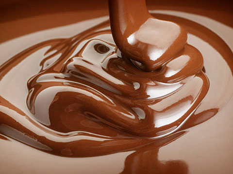

TYPES
What Kind of Chocolate are in the wold?
BEATER
General chocolate used for making sweets. There are a lot of cacao content and the flavor is strong.
Something with a cacao content of around 50% is called a suite, and sometimes it is classified as a beater.

MILK
General chocolate used for making sweets. There are a lot of cacao content and the flavor is strong.
Something with a cacao content of around 50% is called a suite, and sometimes it is classified as a beater.
WHITE
General chocolate used for making sweets. There are a lot of cacao content and the flavor is strong.
Something with a cacao content of around 50% is called a suite, and sometimes it is classified as a beater.
RUBY
General chocolate used for making sweets. There are a lot of cacao content and the flavor is strong.
Something with a cacao content of around 50% is called a suite, and sometimes it is classified as a beater.